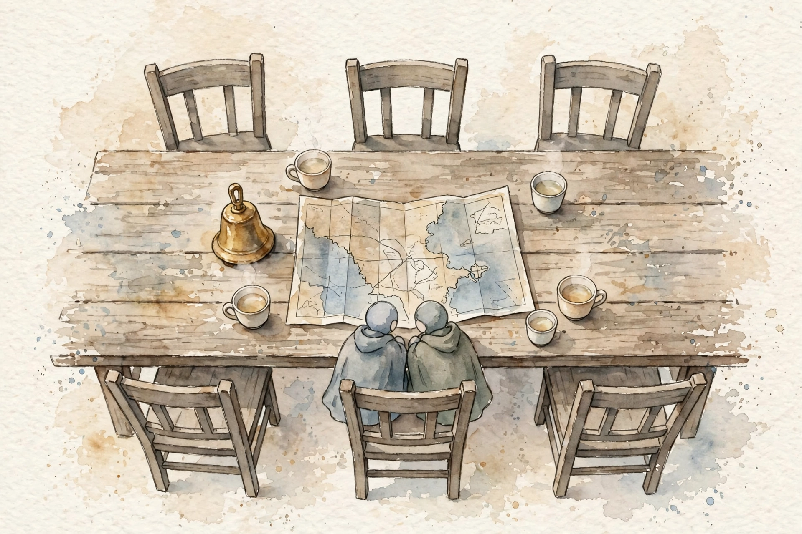
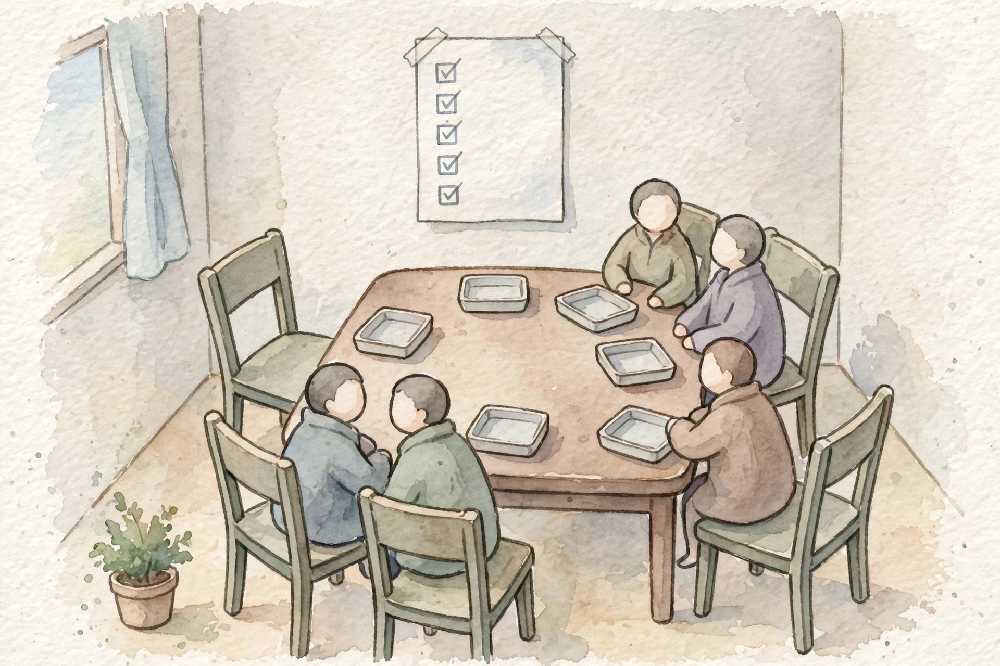
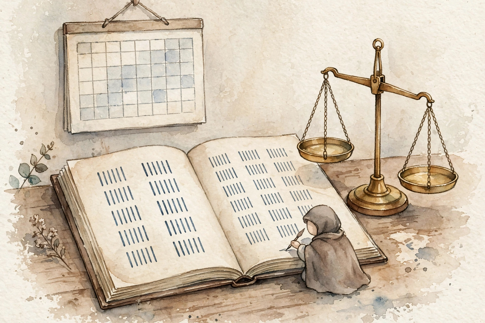

Companion · CCAR-P Domain 6 · Stakeholder Communication and Lifecycle
Domain 6 is the craft of the architect: run the engagement, not just the build. This companion walks the full volume in source order: stakeholder maps, structured discovery, decision memos, ADRs and handoff, the two-SLA split, feedback cadence, and the lifecycle loop that catches drift.
SOURCE / INTERPRETATION: HOW TO READ THE TAGS
From the lesson SOURCE: the idea, and every number beside it, comes from the cited section of the source. The phrasing is the companion's.
Illustration INTERPRETATION: invented by the companion: an analogy, a toy with made-up values, or a what-if. Never source content.
companion INTERPRETATION: companion voice: the idea above the tag is from the source. The generalization below it is the companion's.

From the lesson D6 intro
Domain 6 holds 14 percent of the exam, about 9 questions. Every other domain asks what you would build. This domain asks how you would run the whole engagement: discovery, decision, documentation, handoff, monitor work, and iteration. The volume calls this the craft of the architect: what to build, how to explain choices, how to write honest contracts for probabilistic systems, and how to keep the system healthy after handoff. The questions follow real scenes with stakeholders, constraints, and a disagreement, and ask for the move a senior architect makes.
The exam loves three shapes here. The skipped step: a team jumped to model selection before discovery, or to handoff before evals, and the right answer goes back and does the skipped step. The dishonest promise: a person promised 100 percent accuracy, or signed an SLA with no measure plan, and the right answer restates the promise in honest, measurable terms. The absent owner: quality drifted and nobody noticed, and the right answer names an owner, a metric, and a cadence. Read every D6 item constraint-first: who are the stakeholders, what did they actually agree to, what does the item measure, and who owns it. The distractor almost always sounds clever in technical terms and ignores one of those four.
From the lesson Unit 1
A stakeholder is anyone who can affect the project or feels its effects: the person who funds it, the person who uses it, the person who can block it, and the person who inherits it at 3am. Six types show up in almost every AI engagement. The executive sponsor funds the work and can kill it, and cares about cost, risk, and business outcome. The product owner defines what done means day to day, and cares about shipped value and the backlog. End users live with the system daily, and care about speed, accuracy, and fit with their workflow. Legal and compliance staff guard against lawsuits and regulatory trouble, and care about risk, data handle work, and audit trails. The engineer team builds and operates the system, and cares about feasibility, clarity of requirements, and on-call load. IT and support staff inherit the operational tail, and care about access control, monitor work, and freedom from surprises. Before you choose a model or draw an architecture, write down these six names. Every later unit in this volume is a conversation with one or more of them.
You cannot give all six equal time, so you sort them on two axes. Influence is how much power a stakeholder holds over the project: can they fund it, block it, or kill it. Interest is how much they care day to day: do they live in the system or just sign the checks. The quadrant decides your cadence. High influence with high interest is manage closely, with weekly contact: the executive sponsor sits here in the example map. High influence with low interest is keep satisfied: consult on risk, early, and never drown in detail. Legal and compliance sit here. Low influence with high interest is keep informed, with demos and updates: end users sit here. Low influence with low interest is monitor, with a light touch: the helpdesk sits here. The worked placement uses the contract review assistant of Unit 2. The general counsel sits top-left, high influence over go-live with low day-to-day interest. The head of legal operations sits top-right and owns the eval set and the rollout. The 12 lawyers sit bottom-right as daily users. The IT helpdesk sits bottom-left, looped in before launch so the first ticket is not a surprise. Plot every stakeholder once at kickoff, and re-plot when the project changes shape. The classic exam scene: two weeks before go-live, the compliance officer blocks the rollout, and the case notes that nobody consulted them. No technical fix answers a stakeholder who was never plotted.
From the lesson Unit 2
Structured discovery is a planned series of conversations and document reviews that runs before any architecture exists. Requirement gather work is the output: a written, signed set of measurable requirements. Structured is the key word. An unstructured kickoff produces a wish list. A structured discovery produces numbers, constraints, and named decision makers. A requirement is a single testable statement of what the system must do. Most failed AI projects do not fail on model quality. They fail because the team built the wrong thing, or built the right thing against a wrong definition of done. Discovery is the cheapest phase in which to fix a misunderstanding, and every week of delay multiplies the cost of error. One more exam point: stakeholders describe solutions, not problems. A request for RAG is a solution. A statement that analysts cannot find the right policy document and each search takes 20 minutes is a problem. The job of the architect in discovery is to refuse the premature solution and dig for the problem under it.
Run discovery as short, focused sessions, one per stakeholder type. Sixty minutes each is enough. In each session you fill five buckets: success metrics, constraints, data reality, risk tolerance, and decision rights. Two techniques make it work. Ask what a bad day looks like, because that question surfaces failure modes that polite questions miss. End every session with a one-page write-up and an explicit sign-off, because a requirement nobody signed is a rumor. AI systems add two discovery questions that traditional software skips. What is the acceptable wrong-answer rate, stated as a number, since deterministic software never forces the question. And where does human judgment sit in the loop, and who pays for that labor. Every AI system that touches real decisions needs an answer to both before design starts.
A legal team asks for AI to speed up contract review. Discovery turns the ask into signed requirements. Extract 5 clause types with at least 95 percent precision each. Keep p95 latency under 30 seconds. Hold cost at most $0.40 per contract. Route every output through the lawyer check queue. Deploy inside the company network. Each requirement traces back to one bucket, and each carries a number, a budget, or a named queue. A business sentence with no measurable translation is not a requirement yet.

From the lesson Unit 3
A decision in communication form means a presentation in terms the stakeholder can judge. A non-technical executive cannot judge a reranker over the top 50 chunks. Business language works better: one option costs three times more per request but halves the error rate, and saves an estimated $40,000 a month in rework. A trade-off is a choice where a gain in one dimension costs you in another: accuracy, latency, and cost are the classic three. Two failure modes live here. The black box decision: the architect picks a model, the stakeholder nods, and six months later the bill arrives with no memory of agreement. The detail dump: the architect explains chunk strategies for twenty minutes, the executive tunes out, and approves a design they do not understand. Both end in misaligned expectations. One risk point completes the picture: present one option and you own all the risk of that choice. Present three options with honest trade-offs and let the stakeholder pick, and the risk is shared and documented.
Use the same four-part structure every time. Name the decision in one sentence. Show two or three options as rows in one table, with columns the stakeholder cares about: cost per 1,000 requests, p95 latency, accuracy on our eval set, and risk, in at most five columns, and never a column the stakeholder cannot interpret. Give your recommendation with reasons. State the tripwire: the one fact that would change your mind. The tripwire is what separates a senior architect from a confident guesser, because it tells the stakeholder the exact condition for a return visit. The accuracy, latency, cost triangle is the mental model behind every such memo. Push hard toward one corner and the other two pull back. No corner wins all three, and a promise of one hides the trade-off.
Ticket classification runs at 500,000 tickets per month, each at about 800 input tokens and 50 output tokens, at illustrative prices the volume rounds for the math. Option A is the most accurate and costs $9,000 a month, with a 9-second wait. Option C is near free and instant, and misroutes 12 percent of tickets. Each misroute costs about $6 in agent rework, so Option C costs 500,000 times 12 percent times $6, or $360,000 a month in rework. The cheap, instant option becomes the most expensive one once the error rate has a price. The recommendation is Option B: it fits the budget, answers in 3 seconds, and the 6 percent it misses fall to a confidence-threshold review queue. The tripwire: revisit if volume passes 2 million tickets a month, because at that volume the accuracy of Option A starts to pay for itself. Every number in the recommendation traces to the table.
From the lesson Unit 4
Architecture documentation has two parts. Decision records explain why: the context, the options, the choice, and the consequences. Implementation guidance explains how, with detail enough that an engineer team can build the system without you in the room, and not so much that the documents rot the moment code changes. An ADR, an architecture decision record, is a short, numbered document that captures one significant decision in five parts: title, context, decision, consequences, and status. ADRs live with the code. Never delete them. Supersede them, do not edit them, when the decision changes. A runbook is the operational playbook: how to deploy, how to monitor, and what to do when each alert fires. Six months after launch, someone will propose a simple form of the eval pipeline, a cheaper reranker, or a removal of the human review queue to cut cost. With no written record of why those pieces exist, each cut looks sound in isolation and quality dies by a thousand cuts.
Write one ADR per decision, one page, at decision time, not in reconstruction later. The handoff package holds five items, each with a named owner and a date: the architecture diagram, the decision records, the eval set plus its runner, the runbook, and named owners for evals, prompts, and on-call duty. The eval set plus runner is the most skipped item and the most expensive to skip. Implementation guidance sits between architecture and code: interface contracts, data schemas, the eval bar a change must clear before a merge, and the explicit non-goals. The test is simple: can a competent engineer who was not in the room make a safe change. ADRs plus the handoff package pass that test at low upkeep cost. A 60-page architecture wiki fails it: nobody reads it, nobody trusts it, and it rots.
Context: 500,000 support tickets a month, each in need of policy context. Full-article stuffing sends an average of 40,000 input tokens per request: at an illustrative $3 per million tokens, $0.12 per request and $60,000 a month, at a p95 latency of 14 seconds. Retrieval with rerank retrieves the top 50 chunks and reranks to 8 chunks of 500 tokens each, at about 6,000 tokens per request: $0.018 per request and $9,000 a month, at a p95 of 3 seconds. Eval accuracy on the 2,000-case golden set is 93 percent for stuffing and 95 percent for rerank. The decision is retrieval with rerank. The consequences, stated with candor: a save of roughly $51,000 a month, answers about 4 times faster, and a small accuracy gain, against a new failure mode where the retriever misses the right article, with a low-confidence fallback and a weekly review of fallback cases as the mitigation. Status: accepted. That ADR is why, a year later, nobody simplifies the system back to the full-article design. The numbers are in the repo. The exam scene for this unit is a handoff that looks complete on paper, with diagrams, wiki links, and a walkthrough meet, but no eval set, no runbook, and no named eval owner. Quality then drifts in silence, because nobody owns the measure that would have caught it.
ADR-004: monthly cost of two designs
Full-article stuffing against retrieval with rerank, at 500,000 tickets per month
| Item | Value |
|---|---|
| Full-article stuffing | 60000 |
| Retrieval with rerank | 9000 |
Source: Unit 4 worked example in 06-stakeholder-communication-lifecycle.html in the source repo. Stuffing sends about 40,000 tokens per request at an illustrative $3 per million, or $0.12 per request. Rerank sends about 6,000 tokens, or $0.018 per request.
From the lesson Unit 5
An SLA, a service level agreement, is a contract about performance: what level the system will hit, over what time window, and what happens if it misses. An SLI, a service level indicator, is the thing you actually measure, such as the fraction of successful requests. An SLO, a service level objective, is the target you set for it, such as 99.9 percent. The SLA is the contract that references the SLO and adds the remedy. A feedback loop is a scheduled checkpoint where stakeholders see real performance data and adjust expectations or plans. Expectation alignment means the mental model of the stakeholder matches reality, on purpose and in written form. For AI systems the hardest part is probabilistic candor: state in the contract that the system will sometimes be wrong, how often, and what happens then. The arithmetic of the unit: downtime equals one minus availability, times 43,200 minutes in a 30-day month. At 99.9 percent availability, that is about 43 minutes of downtime a month. Wrong outputs equal one minus the quality rate, times the graded count: at 95 percent quality on 1,000 graded outputs, 50 wrong outputs ship per window.
Traditional software is deterministic: the same input always produces the same output, so if the code is correct and the server is up, the answer is right, and one SLA covers all of it. An LLM is probabilistic: the same input can produce different outputs on different runs, so a healthy, fast system still gives wrong answers at some rate. That splits the promise in two. The availability SLA asks whether the system is up: the fraction of requests that get a successful response, measured by uptime monitors. The quality SLA asks whether the system is right: the fraction of outputs that meet the quality bar, measured by a grade of a sample of real outputs, usually by humans against a rubric, on a cadence such as weekly. You need both, in written form apart, measured apart. An availability SLA never covers quality. The volume calls this the single most tested idea in D6. Availability targets carry their own ladder: 99 percent allows one bad afternoon a month, 99.9 percent allows about 43 minutes, and 99.99 percent allows 4 minutes and 19 seconds and needs multi-region failover. Each extra nine roughly multiplies the engineer cost, so never promise 99.99 percent because it sounds good.
Design the availability SLA first: pick the SLI, the window, and the target, which sets the error budget, the amount of failure the contract allows before consequences run. Write the remedy: service credits, a postmortem within 48 hours, and a reliability sprint if the budget burns two months in a row. Then design the quality SLA. Define the SLI with three choices in the open: sample work, human graders, and a written rubric. Set the SLO as a number with a window, such as at least 95 percent correct per weekly sample of 1,000 outputs. Name the measure cost: 1,000 outputs at 2 minutes each is about 33 reviewer hours, and that labor belongs in the budget at discovery time, not as a surprise later. Write the remedy: two weeks in a row below a floor triggers a quality review, a pause of feature work, a diagnosis of the fail segment, and a report to the product owner. Probabilistic candor becomes contract language in three clauses: the acceptable wrong rate, the safety net of human review on low-confidence output plus a random 5 percent sample, and the drift clause for a degrade in the measured rate. The feedback cadence matches the stakeholder quadrant: a weekly eval dashboard review with the product owner and the eval owner, at fifteen minutes, a monthly business review with the executive sponsor, a quarterly architecture revisit, and a demo on real data by week two or three, because no thing aligns expectations faster than the system at work on the messy inputs of the stakeholder.
Availability: 99.9 percent per month, measured by the 5xx rate at the API gateway. Error budget: 43 minutes. Remedy: a 10 percent service credit per extra 43 minutes, and a postmortem within 48 hours. Quality: at least 94 percent of weekly sampled responses graded correct and safe by reviewers, on a sample of 800. Two weeks below 92 percent trigger the quality review: feature work pauses, the fail segment gets a dedicated fix, and results go to the product owner. Review labor: 800 outputs at 90 seconds each is 20 reviewer hours per week, budgeted and staffed. Every promise in the contract carries a number, a window, a measure method, and a remedy. If one of the four is absent, it is not an SLA. The trap set: a demand for 100 percent accuracy in the contract, and a vendor uptime SLA offered as proof that answers are reliable. A system can post 100 percent uptime for a month and sit wrong 20 percent of the time.

From the lesson Unit 6
The lifecycle has six phases: discover, design, build, hand off, monitor, and iterate, and then the loop turns again. The steering wheel for the whole loop is the eval set of Unit 4. Monitor work is the constant collection of four production signals: quality, latency, cost, and safety. Iteration is the disciplined cycle of a detected change in those signals, a diagnosis of the cause, a fix, a re-evaluation, and a ship. Production systems decay: data formats change, user behavior shifts, and a new model version behaves in a small different way. With no managed loop, the first sign of decay is an angry customer or a surprise bill, and by then the damage is weeks old. With a managed loop, the eval dashboard shows the dip on Tuesday, the owner runs the investigation on Wednesday, and the fix ships before most users notice. An AI system is never done in the way a bridge is done. Launch day is a start line, in written form across roles, dashboards, and calendars.
The four signals each carry an owner and a threshold. The iteration loop runs five steps in order, in the step-through below this text. Revisit triggers are the calendar form of the loop: events that force an architecture review whether or not a signal fired. A new model generation ships. Cost doubles. The business enters a regulated market. At each trigger, the original ADRs get a fresh read and a reaffirm decision or a supersede record. With no triggers, architecture reviews happen never.
Week 14 after launch, the weekly graded sample shows quality at 91 percent, down from a steady 96 percent. The per-segment breakdown: refund-policy questions fell from 97 percent to 82 percent, and all else is flat. Diagnosis: the company reformatted its refund policy PDF in week 12, and the chunker now splits the key table across two chunks, so the retriever returns half the rule. Fix: adjust chunk boundaries for table-heavy documents and add 40 refund cases to the golden set. Re-evaluation: the full set passes at 96 percent, the refund segment returns to 96 percent, and no regressions appear elsewhere. Total user-visible impact: near zero, because the loop caught the drift in the dashboard and not in the support inbox. The counterfactual: with no eval owner and no weekly review, the first signal is a spike in refund complaints in week 20, the diagnosis starts from angry tickets instead of clean data, and the fix takes three weeks instead of three days. That gap is what lifecycle management buys. The traps of the unit: a switch to the newest model as a first move, and a rollback to the launch-day prompt as a safe move. Both skip diagnosis. Monitor work that covers uptime and error rates alone is the infrastructure-only trap, because the dangerous decay is silent: the service is up, the responses are fast, and the answers grow worse in slow form.
companion Step through the sequence. Open one step at a time.
A signal crosses its threshold. The dashboard, not a human, finds it: a quality dip, a latency rise, a cost jump, or a safety event.
Quality fell from 96 percent to 91 percent. On which segment? Per-segment evals reveal the answer. Aggregate numbers hide it. Never skip diagnosis.
Apply one change at a time: a chunk fix for a new document layout, or the absent examples added to the prompt.
Run the full eval set, with the regression cases. A fix that heals one segment and breaks another is not a fix.
Deploy, then watch the signal for a full cycle before a victory claim.
From the lesson Tactics
Five rules answer most D6 questions. Constraint-first read work: before a look at the options, write down the stakeholders, the numbers, and the absent pieces, because the trap option almost always ignores one of them. The skipped step is the answer: discovery before architecture, measure work before promises, diagnosis before fixes, and ownership before handoff. Split every absolute promise: 100 percent accurate becomes a measured quality rate with a safety net, and 99.9 percent uptime never covers correctness. Name the owner: if the scene holds drift quality and no named eval owner, the answer creates one, because metrics without owners are decorations. Recommend, do not decree: show options in business terms, recommend one, and state the tripwire. That is the senior architect voice the exam rewards. The volume states that its figures are built from first principles with no external image sources, that cost and price numbers are illustrative and rounded for the math, and that a last verification against official Anthropic sources ran in September 2026.
Study plan minutes by section
The study plan for the Stakeholder volume, from the study JSON
| Item | Value |
|---|---|
| Volume intro | 1 |
| How D6 items are built | 1 |
| Stakeholders | 5 |
| Discovery | 7 |
| Decision communication | 7 |
| Documentation | 8 |
| Feedback and SLAs | 11 |
| Lifecycle management | 6 |
| Exam tactics | 2 |
Source: study/06-stakeholder-communication-lifecycle.json in the source repo. Lesson sections sum to 48 minutes. The full plan totals 51 minutes with the three link sections at 1 minute each.
From the lesson Guide close
The guide closes each volume with three link sections. This chapter covers all three in source order.
The seven domain weights are: Solution Design and Architecture 17 percent, Models, Prompting and Context 13 percent, Integration 19 percent, Evaluation, Testing and Optimization 16 percent, Governance, Safety and Risk 14 percent, Stakeholder Communication and Lifecycle 14 percent, and Developer Productivity and Enablement 7 percent. The prerequisite volume is Claude Developer Fundamentals.
The practice side holds a practice question bank of 106 questions and a system design guide with 8 reference designs.
Every lesson on this page, in order. Tap one to return to its chapter.